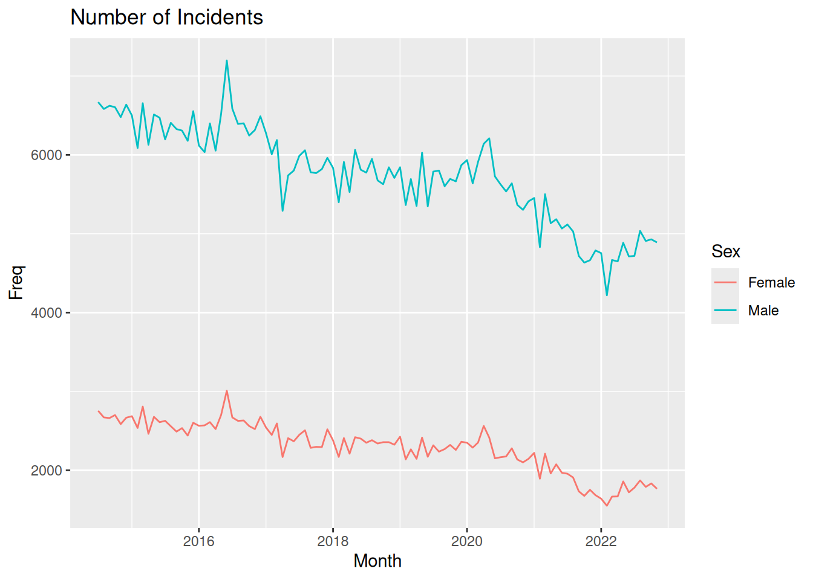

library(tidyverse)
library(grid)
library(ggtext)Lab5 - Graphic Design
Loading packages.
The data and questions of interest
Data shows rows of incidents handled by the Police.
crime <- read.csv("nzpolice-proceedings.csv")Generate data with incidents for both male and female offenders.
crimeTable <- table(crime$Date, crime$SEX)
crimeProp <- as.data.frame(apply(crimeTable, 1, function(x) x[1]/sum(x)))
names(crimeProp) <- "Prop"
crimeProp$Month <- as.Date(rownames(crimeProp))
crimeSex <- as.data.frame(crimeTable)
names(crimeSex) <- c("Date", "Sex", "Freq")
crimeSex$Month <- as.Date(crimeSex$Date)
head(crimeSex) Date Sex Freq Month
1 2014-07-01 Female 2755 2014-07-01
2 2014-08-01 Female 2671 2014-08-01
3 2014-09-01 Female 2663 2014-09-01
4 2014-10-01 Female 2701 2014-10-01
5 2014-11-01 Female 2586 2014-11-01
6 2014-12-01 Female 2667 2014-12-01Create data with females and males broken down by crime type.
crimeTypeSexList <- lapply(split(crime,
list(crime$Date,
crime$SEX,
crime$ANZSOC.Division)),
nrow)
crimeTypeSex <- cbind(as.data.frame(do.call(rbind, crimeTypeSexList)),
as.data.frame(do.call(rbind,
strsplit(names(crimeTypeSexList),
"[.]"))))
rownames(crimeTypeSex) <- NULL
colnames(crimeTypeSex) <- c("Count", "Month", "Sex", "Type")
crimeTypeSex$Month <- as.Date(crimeTypeSex$Month)
monthFirst <- subset(crimeTypeSex, Month == "2014-07-01" & Sex == "Male")
monthLevels <- monthFirst$Type[order(monthFirst$Count, decreasing=TRUE)]
monthLabels <- unlist(lapply(strwrap(monthLevels, width=25, simplify=FALSE),
function(x) {
if (length(x) < 3)
x <- c(x, rep(" ", 3 - length(x)))
paste(x, collapse="\n")
}))
monthLabels2 <- unlist(lapply(strwrap(monthLevels, width=25, simplify=FALSE),
function(x) {
x <- x[x != ""]
paste(x, collapse="\n")
}))
crimeTypeSex$Type <- factor(crimeTypeSex$Type, levels=monthLevels, labels=monthLabels2)
head(crimeTypeSex) Count Month Sex
1 121 2014-07-01 Female
2 89 2014-08-01 Female
3 129 2014-09-01 Female
4 112 2014-10-01 Female
5 110 2014-11-01 Female
6 116 2014-12-01 Female
Type
1 Abduction, Harassment\nand Other Related\nOffences Against a\nPerson
2 Abduction, Harassment\nand Other Related\nOffences Against a\nPerson
3 Abduction, Harassment\nand Other Related\nOffences Against a\nPerson
4 Abduction, Harassment\nand Other Related\nOffences Against a\nPerson
5 Abduction, Harassment\nand Other Related\nOffences Against a\nPerson
6 Abduction, Harassment\nand Other Related\nOffences Against a\nPersonQuestions of interest
Focus on gender differences. Specifically
- Are the trends in the number of incidents over time the same for Male and Female offenders?
- Are the trends over time the same for Male and Female offenders for different types of crime?
Data visualisations and questions
Question 1
This data visualisation is what we get from a “default” line plot using ggplot2.
ggplot(crimeSex, aes(x = Month, y = Freq, colour = Sex)) +
geom_line() +
labs(title = "Number of Incidents")
Questions of interest
Since this plot does not stratify by crime type, we can only comment on the first question of interest. The trend does seem to be similar for men and women, with an overall downward trend for both genders. The graph have natural spikes at the same places, and both for men and women there seems to be an increase since 2022.
CRAP design guidelines
- Contrast: The only real contrast in the plot is the colors of the lines used to specify Male/Female. There is also a bit of contrast between the white of the outer bound of the figure and the grey of the plotting area background, which is then also present in the legend. However, this makes the contrast between the lines and the background less noticable.
- Repetition: The same font is used for all text in the plot.
- Alignment: The title is left-aligned with the plotting region.
- Proximity: The axis break labels and axis ticks are very close together, indicating that the value displayed is at the tick mark. Also, the legend title and legend keys are close together, indicating the legend as a “single unit” though the elements are not fx. enclosed.
Question 2
- Contrast: We change the title to be much bigger, be a different color, have a different font family and a bold font face compared to the other text in the picture. Due to white background, I would argue the contrast between the background and the colored lines make the lines more visible.
- Does not necessarily make the questions of interest easier to answer, but the title more easily catches the viewers eye, making sure they get an idea what the plot is about.
- Repetition: We create a plot where all text except the contrast-filled title has the same color
grey60, which is again the same color as the grid lines.- The lines jump out a bit more due to the use of grey for the text and grid lines, and the consistency of color might make it a bit easier to decode the data values. In regards to answering a question about a time trend, it might not be much, but if a viewer would like to try and decode values more precisely, this might help.
- Alignment: We move the legend to the top of the plot and align it with the plotting region. Furthermore, we remove the expansion on both axes, meaning the start and end of both lines are aligned with the edges of the plotting region.
- The alignment of the lines in the plotting region makes it easier to decode the data values. The alignment of the legend just makes it look nicer. Not directly helping with answering questions of interest. Same points as above.
- Proximity: By moving the legend to the top, it’s much closer to the title, making it more clear that “Number of Incidents” related to men and women.
- By moving the legend closer to the title, the story of what the plot wants to show is more apparent, and it’s easier for the viewer to understand the information we try to convey and answer questions of interest.
ggplot(crimeSex, aes(x = Month, y = Freq, colour = Sex)) +
geom_line() +
labs(title = "Number of Incidents", colour = "") +
scale_y_continuous(breaks = seq(1000, 10000, 1000), expand = c(0, 0)) +
scale_x_date(date_breaks = "1 year", date_labels = "%Y", expand = c(0, 0)) +
theme_minimal() +
theme(plot.title = element_text(
size = 42, face = "bold", family = "serif", colour = "black"
),
panel.grid.major = element_line(
colour = "grey60",
linewidth = 0.2
),
panel.grid.minor = element_blank(),
text = element_text(
colour = "grey60"
),
axis.text = element_text(
colour = "grey60"
),
legend.position = "top",
legend.justification = -0.013
)
Question 3
Code with “manual” gggrid coding to color words in title
To create the plot, I do the following:
- To create the dark theme:
plot.background=element_rect(colour=NA, fill=rgb(.1,.1,.1))andpanel.background=element_rect(colour=NA, fill=rgb(.1,.1,.1))to make background all black. - Remove strips from facetting and include the labels directly in the plot with
gggrid::grid_panel.- Use
coord_cartesian(clip = "off")to ensure the text labels we add are not clipped and adjustplot.marginaccordingly in thetheme. - We write the text 7 mm above the first value in the panel.
- Use
- Add the title as a
grobTreeof grobs with colorings according to groups- For the first panel in the figure, we create a title (using and IF statement of
if (unique(data$PANEL) == 1)) by writing the text up until the colored words we want, then we take the width withgrid::grobWidthand use that as our x-position when then creating a new grob with only the colored word. We then create the entire title by putting all the grobs together in agrobTree.
- For the first panel in the figure, we create a title (using and IF statement of
Create the function to be used in gggrid::grid_panel.
addCrimeType <- function(data, coords,
fontfamily = NULL,
add_title = TRUE,
title.vjust.cm = 2, title.fontsize = 18,
strip.label.vjust = grid::unit(4, "mm"),
strip.label.fontsize = 9) {
y1_coord <- max(slice_head(coords, by = "group")$y)
typeLabel <- grid::textGrob(
data$type,
x = 0,
y = grid::unit(y1_coord, "npc") + strip.label.vjust,
just = c(0, 0),
gp = grid::gpar(
col = "grey50",
fontsize = strip.label.fontsize,
fontfamily = fontfamily
)
)
line <- grid::linesGrob(
x = c(0, 1),
y = c(0, 0),
gp = grid::gpar(col = "grey50")
)
if (add_title && unique(data$PANEL) == 1) {
y_pos <- grid::unit(y1_coord, "npc") +
grid::unit(7, "mm") +
grid::unit(title.vjust.cm, "cm")
init_title_male <- grid::textGrob(
"Number of incidents for ",
y = y_pos,
x = 0,
just = c(0, 1),
gp = grid::gpar(
col = "grey50",
fontsize = title.fontsize,
fontfamily = fontfamily)
)
width_male <- grid::grobWidth(init_title_male)
male_color <- unique(data[data$sex == "Male", ]$colour)
males_grob <- grid::textGrob(
"Males",
y = y_pos,
x = width_male,
just = c(0, 1),
gp = grid::gpar(
col = male_color,
fontsize = title.fontsize,
fontfamily = fontfamily)
)
init_title_female <- grid::textGrob(
"Number of incidents for Males and ",
y = y_pos,
x = 0,
just = c(0, 1),
gp = grid::gpar(
col = "grey50",
fontsize = title.fontsize,
fontfamily = fontfamily)
)
width_female <- grid::grobWidth(init_title_female)
female_color <- unique(data[data$sex == "Female", ]$colour)
females_grob <- grid::textGrob(
"Females",
y = y_pos,
x = width_female,
just = c(0, 1),
gp = grid::gpar(
col = female_color,
fontsize = title.fontsize,
fontfamily = fontfamily)
)
title <- grid::grobTree(init_title_female, males_grob, females_grob)
return(grid::grobTree(typeLabel, line, title))
}
grid::grobTree(typeLabel, line)
}Define a function to create the plot.
darkplot <- function(title.vjust.cm = 2, ...) {
ggplot(crimeTypeSex, aes(x = Month, y = Count, colour = Sex)) +
geom_line(show.legend = FALSE) +
facet_wrap(~ Type) +
gggrid::grid_panel(function(data, coords)
addCrimeType(data = data, coords = coords, ...),
aes(type = Type,
sex = Sex)) +
scale_x_date(expand = expansion()) +
scale_y_continuous(expand = expansion(mult = c(0, 0.05))) +
theme(plot.background=element_rect(colour=NA, fill=rgb(.1,.1,.1)),
panel.background=element_rect(colour=NA,
fill=rgb(.1,.1,.1)),
panel.grid.major=element_blank(),
panel.grid.minor=element_blank(),
axis.title=element_blank(),
axis.ticks=element_blank(),
axis.text=element_text(colour = "grey50"),
strip.background = element_blank(),
strip.text = element_blank(),
panel.spacing.x = grid::unit(1, "lines"),
panel.spacing.y = grid::unit(3, "lines"),
plot.margin=unit(c(title.vjust.cm + 1,1,1,1), "cm")) +
coord_cartesian(clip = "off")
}Call function to create the plot.
darkplot()Easier way of coloring title with ggtext
Rather than adding our own title as a textGrob within the 1st panel and increasing the plot margin to contain the title, we use ggtext to color the “default ggplot title”.
To do this, we specify the title as a character string with HTML to color the words and then specify the plot.title argument in ggplot2::theme() using the function ggtext::element_markdown().
darkplot2 <- function(colors = NULL, fontfamily = NULL, ...) {
if (is.null(colors)) {
colors <- setNames(scales::pal_hue()(2), c("Female", "Male"))
}
ggplot(crimeTypeSex, aes(x = Month, y = Count, colour = Sex)) +
geom_line(show.legend = FALSE) +
facet_wrap(~ Type) +
gggrid::grid_panel(function(data, coords)
addCrimeType(
data = data, coords = coords,
add_title = FALSE,
fontfamily = fontfamily,
...),
aes(type = Type,
sex = Sex)) +
scale_x_date(expand = expansion()) +
scale_y_continuous(
breaks = seq(0, 900, 300),
expand = expansion(add = c(0, 100))) +
scale_color_manual(values = colors) +
labs(title = paste0(
"Number of incidents for <span style = 'color:",
colors["Male"],
";'>Males</span> and <span style = 'color:",
colors["Female"],
";'>Females</span>"
)
)+
theme(
plot.title = ggtext::element_markdown(
family = fontfamily,
size = 18, colour = "grey50",
padding = unit(c(0, 0, 1.5, 0), "cm")
),
plot.background=element_rect(colour=NA, fill=rgb(.1,.1,.1)),
panel.background=element_rect(colour=NA,
fill=rgb(.1,.1,.1)),
panel.grid.major=element_blank(),
panel.grid.minor=element_blank(),
axis.title=element_blank(),
axis.ticks=element_blank(),
axis.text=element_text(
colour = "grey50",
family = fontfamily),
strip.background = element_blank(),
strip.text = element_blank(),
panel.spacing.x = grid::unit(1, "lines"),
panel.spacing.y = grid::unit(3, "lines"),
plot.margin=unit(c(1,1,1,1), "cm")) +
coord_cartesian(clip = "off")
}Create the plot using ggtext.
darkplot2()Questions of interest
This plot lets us investigate the time trend of men vs. women for different crime types. However, there is a limitation that for some crime types, the frequency is too low for us to identify any trends on this plot with a common scale for all multiples.
The trend seems to be the same overall. We identified in question 1 that the overall trend is downward but with a slight increase since 2022. This is true for both men and women for the 4 most common crime types, though with a slighly more drastic decrease for men than women for “Public Order Offences”. For this crime type, we only see the increase from 2022 and onward for men and not women.
CRAP design principles
- Contrast: The blue and red colors used to color the lines and words in the title are very vibrant due to the contrast with the black and quite dark grey.
- Repetition: The same grey color is used for all text, axis breaks, line at 0 and in the title.
- Alignment: The text of crime types is left-aligned with the plotting area of each facet as well as bottom-aligned just above the height of the blue line at the first data point. Also the title is left-aligned with the overall plotting region.
- Proximity: Using direct-labelling of the crime types rather than in the default strip boxes produced by
facet_wrap, we ensure that the text is, as mentioned above, placed directly above the blue line in each facet. The text being in close proximity to the lines means the viewer knows what lines represent what crime type.
Challenge
Download the font online, extract the ZIP file locally, and use the Windows interface to install the font. Then, using Cairo graphics, I can refer to the name of the font on my system to use it.
Here we just use a standard font to avoid issues with running in CI.
darkplot2(fontfamily = "Times New Roman")Overall summary
The CRAP design principles contract, repetition, alignment and proximity gives a basic framework to create and critique plots in regards to aspects that are known to improve “readability” of a plot for most people.
In this lab we see that plots showing the exact same data can be made easier to interpret using these simple principles, as illustrated by the plot in question 2 that employs more of the principles than question 1. In question 3 we see especially how contrast can be taken advantage of to really create an even more extreme pre-attentive pop-out, and we see how repetition, alignment and proximity can be used effectively to create a small multiples plot with direct labelling.